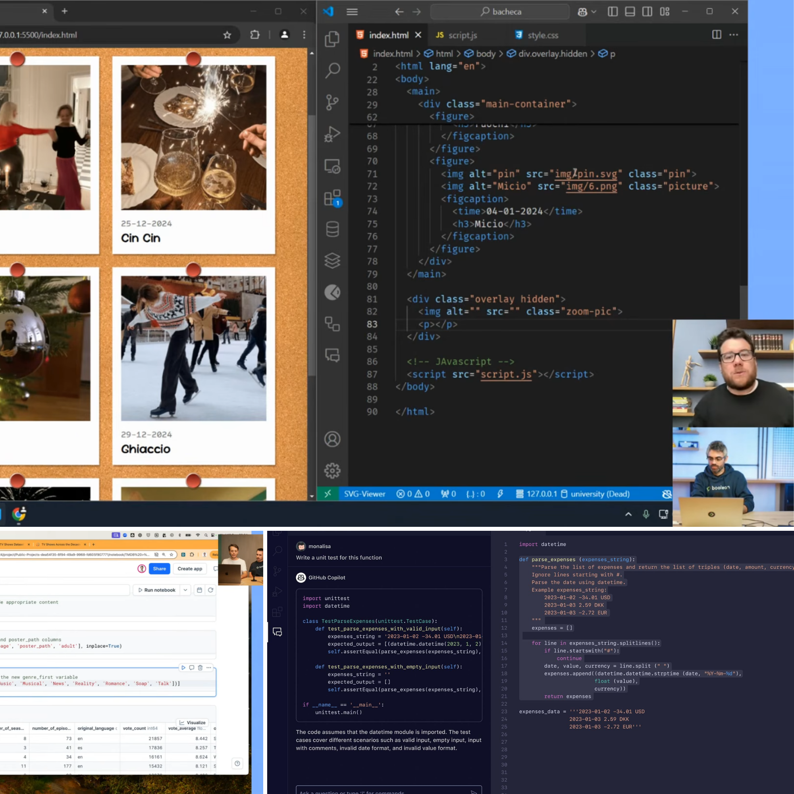

Attività PCTO · 2023–2024
Formazione e orientamento nel Web Development: quattro corsi, quaranta ore, centinaia di righe di codice e la scoperta di un percorso universitario.
Chi è Boolean
Boolean è una realtà specializzata nella formazione in ambito tecnologico e digitale. I suoi percorsi sono caratterizzati da un approccio pratico e orientato ai progetti, con lezioni online dal vivo, tutor specializzati e docenti che operano direttamente nel settore informatico.
L'obiettivo è fornire competenze immediatamente applicabili attraverso la realizzazione di progetti concreti e l'utilizzo delle tecnologie più richieste dal mercato del lavoro.
Nel corso del mio percorso scolastico ho partecipato a diversi corsi PCTO organizzati da Boolean, che mi hanno permesso di approfondire lo sviluppo web e di acquisire competenze fondamentali nella programmazione. Queste esperienze hanno avuto un ruolo importante nell'orientare il mio interesse verso l'Ingegneria Informatica.

Percorsi PCTO
2023
Coding Week — Arcade Collection
Primo contatto strutturato con lo sviluppo software. I concetti fondamentali della programmazione sono stati introdotti attraverso HTML, CSS e JavaScript, con cenni a Python e C++. Ogni concetto veniva immediatamente applicato in un progetto concreto. Ha rappresentato la scoperta che il codice può trasformare un'idea in un prodotto funzionante.
2024
Web Development — AI Apps
Integrazione tra sviluppo web e intelligenza artificiale. Attraverso HTML, CSS, JavaScript e modelli GPT, ho realizzato applicazioni che mostravano come l'IA possa essere incorporata in prodotti digitali reali. Un settore in forte crescita che ha ampliato significativamente la mia visione del possibile.
2024
Web Development — Mobile Apps
Progettazione e sviluppo di interfacce per dispositivi mobili in HTML, CSS e JavaScript. Il percorso ha messo al centro l'usabilità, il design delle interfacce e l'esperienza dell'utente — aspetti oggi centrali in qualsiasi prodotto digitale di successo.
2024
Web Development — Arcade Mania
Il percorso più articolato del triennio. Cinque progetti in HTML, CSS e JavaScript che hanno richiesto maggiore autonomia e organizzazione. Ha consolidato le competenze precedenti e sviluppato una sicurezza crescente nell'affrontare problemi di programmazione e nel progettare applicazioni web interattive.
Oltre il PCTO
Oltre ai corsi riconosciuti come PCTO, ho partecipato e continuo a partecipare a numerose attività formative nel settore informatico. In particolare ho approfondito temi legati all'intelligenza artificiale, alla cyber security, all'UX design attraverso Figma e ad altri ambiti della progettazione digitale.
Attualmente sto seguendo anche percorsi formativi più avanzati e professionalizzanti dedicati a Python, C++, AI Engineering e altre tecnologie emergenti. Sebbene queste attività non siano state riconosciute come PCTO, hanno contribuito in modo significativo alla mia crescita personale e professionale.
"La realizzazione di questo stesso sito è una diretta conseguenza delle competenze sviluppate durante questi percorsi formativi."
Risultati
Tecniche
Trasversali
Orientamento
Queste esperienze hanno avuto un ruolo determinante nella mia scelta universitaria. Grazie ai corsi Boolean ho potuto comprendere concretamente cosa significhi lavorare nel settore informatico e ho maturato la decisione di proseguire gli studi nel campo dell'Ingegneria Informatica presso il Politecnico di Bari.
Anche la realizzazione di questo stesso sito rappresenta una diretta conseguenza delle competenze sviluppate durante tali percorsi formativi. Le conoscenze apprese mi hanno consentito di progettare e sviluppare autonomamente una piattaforma web moderna e funzionale.
Valutazione
Punti di forza
L'approccio estremamente pratico ha reso ogni concetto immediatamente applicabile. Le lezioni live permettevano il confronto diretto con docenti e tutor. L'accessibilità dei corsi PCTO ha offerto gratuitamente contenuti di qualità elevata e aggiornati rispetto alle tecnologie attualmente richieste dal mercato.
Criticità
Personalmente non ho riscontrato particolari criticità. Al contrario, considero questi percorsi tra le esperienze formative più utili dell'intero triennio, sia per le competenze acquisite sia per l'importante contributo all'orientamento delle mie future scelte accademiche e professionali.